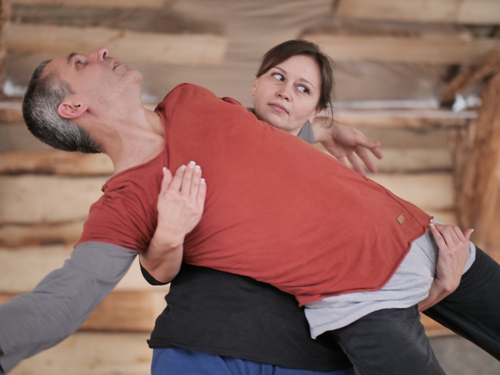
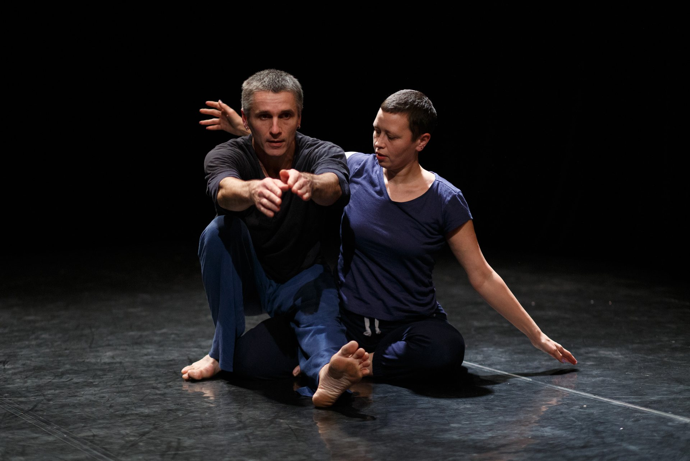
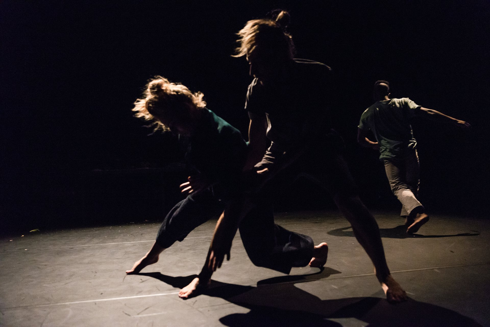
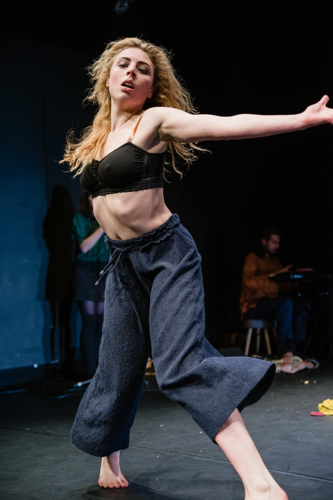
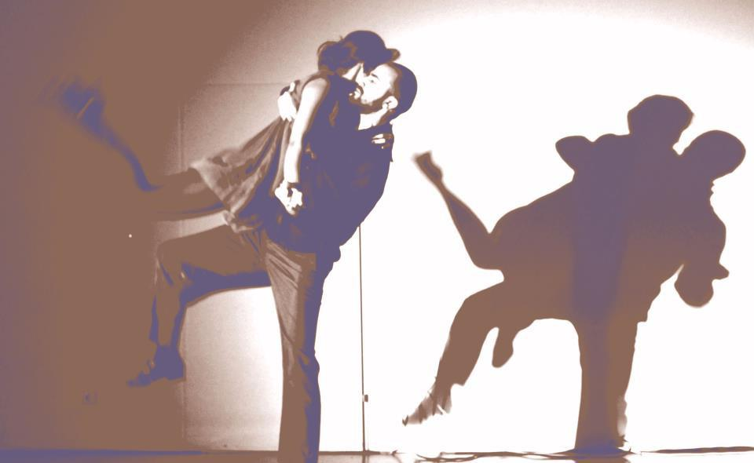
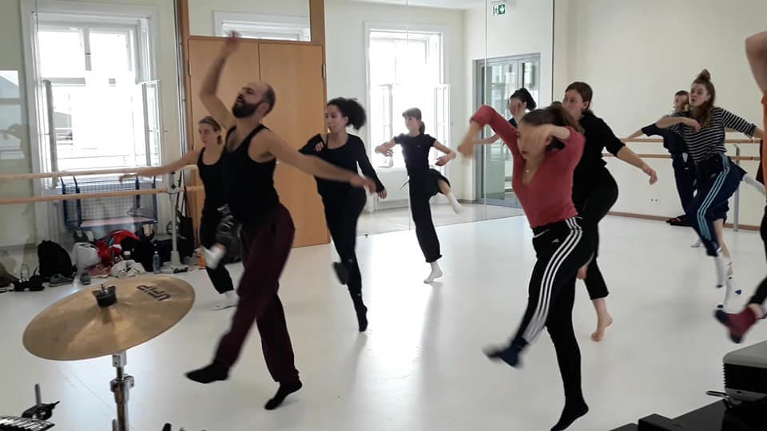

Dates
March 7–13, 2022
Pre-workshops: March 5–6
Location
Idyllic Valley Ecological Farm
Yanıklar, Fethiye / Muğla, Turkey
Teachers
Sergey & Marina Semichevi, Tamara Maksymenko
Serkan Bozkurt, Sara Pons & Stefan David
Format
CI, Solo, Contact Tango & Body Weather
ECO-dance-farm in Fethiye
01 / Gathering in Freedom
Despite the reality where the pandemic lasts almost 2 years and dance art barely survives with half-closed theatres and dance studios, we keep looking for the place we all can gather and dance truly free and wild.
The body suffers a lot without dance and movement research and it is needless to say, that emotional stability depends on how do we treat our bodies. So...
We are thrilled to invite you to spend one week together in a fascinating and ancient place of the world - Fethiye/Turkey in ECO-dance-farm.
All information about the facility you can find in PLACE.
In case you are interested checking out the great guest-teachers we have, take a look into the PROGRAM.
In your free time, you will have the opportunity to look at archaeological excavations, dive deeper into the ancient vibes that this place inherited after so many different and fascinating cultures, relax at the seaside or hike in the mountains.
02 / Practical Information
The detailed information can be found in SIGHTS of the place.
The DIRECTION and CONNECTION link will help you to navigate your path to the venue. For true connosouirs, there is always fresh and tasty food in Turkey and the place we live is not an exception. More insights about food are waiting for you in the FOOD area.
We highly appreciate your coming, though to make the organization smooth, please check on the registration and pricing by the following link: PRICE and REGISTRATION.
Last, but not least: Current COVID-regulation in Turkey are far from being severe and quite reasonable. You can enter the country with either PCR-test, vaccination or recovered.
We hope to meet you on the dancing floor
See you soon.
Explore Festival Sections
Festival Directory
01 / Eco-Farm
Place & Accommodation
Idyllic Valley Ecological Living Farm: Stone Mansions, Mud Houses, and Wooden Houses in Yanıklar, Fethiye.
View Place →
02 / Faculty & Schedule
Teachers & Program
Sergey & Marina Semichevi, Tamara Maksymenko, Serkan Bozkurt, Sara Pons, and full weekly schedule.
View Program →
03 / Travel & Cuisine
Direction & Food
How to reach Pastoral Valley from Dalaman Airport, Istanbul, Ankara, or Izmir, plus bio-farm meals.
View Travel →
04 / Join Us
Registration & Prices
Participation tiers, accommodation options, pre-workshops with Stefan David, and registration form.
Registration →
Passes & Booking
PRICE and REGISTRATION
So here we go with all options and all prices.
Please pay attention: in order to have valid registration you have to prepay only half of the total amount.
Half-Pension (Breakfast & Dinner)
Accommodation with food (half-pension, breakfast and dinner):
275 liras (depend on the currency 17-20 euros) per day per person
2200 liras (approximately 140-155 euros) for the week (Sunday 06.03.22 - Monday morning 14.03.22)
140–155 €
2200 liras / week
Full-Pension (3 Meals)
Accommodation full-pension:
325 liras per day (20-23 euros)
2600 liras (165-172 euros) for the week (Sunday 06.03.22 - Monday morning 14.03.22)
165–172 €
2600 liras / week
Festival Pass
Price for participation
Price for participation until December, 31 - 200 euros
Price for participation until January, 15 - 225 euros
Price for participation until January, 31 - 240 euros
Price for participation until February, 15 - 280 euros
Price for participation until February, 28 - 320 euros
After February, 28 the registration will be closed.
200–320 €
Depending on registration date
There are only a certain amount of people that a dancing space can comfortably accommodate, hence your early registration is highly appreciated!
Festival Policy
The Conditions of the COVID ERA
In case you will be unable to join us because of illness or another personal issue, your prepayment won't be returned. We hope for your understanding in this regard.
Pre-Festival Workshops · March 5–6
Awesome news!!!
Stefan David (Vienna)
We have pre-workshops of the festival with an amazing Stefan David from Vienna! Saturday and Sunday, March 5-6th. Extra cost for participation in these classes is 20 euros only. If you would like to participate, just make a note in the registration form in the field "message"!
Description of the workshop:
"The Breathing Body“
- the principles of contracting & expanding
-Inhale & exhale,
observing your breath while dancing / flying…
keeping low tone in limbs for better sensing
breathing body while passing through a Jam,..
connecting with more than one in the Jam situation ( „more score“)
Sign Up
The registration form:
ECOLOGICAL FARM HOLIDAY FOR THOSE WHO DREAM OF A NATURAL AND HEALTHY LIFE.
PLACE — Idyllic Valley Ecological Living Farm
The farm cultivates its own vegetables and fruits with an ecological approach on a 42-decare land with rich biodiversity, in the middle of a valley surrounded by pine forests, in the village of Yanıklar, Fethiye, next to the Kargı Stream, where farm animals such as goats, sheep, chickens, ducks and horses are located.
It has a warm cosy dance hall and different sleeping facilities as well. As to accommodation you have the next options:
01 / Accommodation Option
STONE MANSIONS
It consists of independent houses with one room on the ground floor and two rooms on the upper floor made in authentic architecture style by using local materials. Each house has its own bathroom, kitchen and a large terrace. Stone houses, which provide a naturally cool environment in summer, are heated with a stove in winter.
02 / Accommodation Option
MUD HOUSES
These houses, built in traditional architectural style using handmade mud bricks and wooden beams, have two bedrooms, a bathroom, a kitchen, a living area and a large porch. The adobe houses, which provide a naturally cool environment in the summer, are heated with a stove in the winter.
03 / Accommodation Option
WOODEN HOUSES
On the edge of the Kargı Stream, which forms the border of the Pastoral Valley, one and two-room wooden houses under the shade of adult eucalyptus trees have a bathroom and a small kitchen on the porch.
Each house (room) has its own toilet facilities and shower.
There is no matter what kind of house you will choose, the difference is only in food.
2 times meal - 17,70 euros per person per day
3 times meal - 21 euros per person per day
Before you choose your option, please pay attention that normally during lunch we are going to visit the sights of Fethiye!
You can find it here: PROGRAM
Location: Yanıklar, Pastoral, Vadi Ekolojik Yaşam Çiftliği, Dolmuş Cd No:3, 48300 Fethiye/Muğla, Turkey
Please specify the house you'd like to be staying in in the registration form as well as your meal preferences. Press here:
PRICE and REGISTRATION
Incredible teachers, as well as incredible dances, will be waiting for us.
PROGRAM
Turkey is a unique place where West meets East, therefore we have special guests from Ukraine - Sergey and Marina Semichevi, who are going to lead the main CI course.


Main CI Course
Sergey & Marina Semichevi
Sergey Semichev:
CI teacher, dancer, performer, body therapist, photographer, videographer.
In the past he was involved in acrobatics, gymnastics, worked as a fitness instructor and never stopped dancing.
Marina Semicheva:
Teacher of CI, dancer, performer, fashion designer.
Description of the course:
We will look at the basic principles of contact improvisation from a different perspective. It is the free use and understanding of the basic principles of movement and interaction that creates the most unusual and beautiful forms of improvisation. Playing with gravity, with the physical possibilities of our bodies and interaction with space will help us to turn every moment of time into an unforgettable and unique dance. We will try to coordinate and activate the entire body system, which will help us instantly respond to any changes in the space inside and outside. We will learn to feel and respond to the smallest changes as well as to look for our own dance, interest and pleasure.


Morning Sessions of Solo Improvisation
Tamara Maksymenko
Morning sessions of solo improvisation will be with Tamara Maksymenko:
Tamara Maksymenko is a professional dancer, choreographer and teacher of contact improvisation and contemporary dance with 14 years of experience. She is also a founder of Solo & CI Tirol Festival (Austria) and "West meets East".
Session description:
I've always said: "contact starts from solo".
Sometimes it's not easy for us to start jams and we often feel uncomfortable dancing solo. I invite you to find your inner peace and self-confidence. We will focus on some solo-improv patterns, release techniques and learn to listen to the body responses and to wake up slowly.


Contact Tango Workshop
Serkan Bozkurt
choreographer and dance pedagog, studied contemporary dance pedagogy in Vienna in MUK. He took first award in the Fidelio fine art competition in 2010 as choreographer. Since 2000 he teaches different dances (contemporary, contact tango, spiritual dance) and focuses on otantic movement, individuality.
Description:
Contact tango workshop is designed to bring contact improvisation and tango flows together. Both have their own dynamic but they are also coming from the moment. Music says what other bodies talk about. Listening to each other talking fluently with the rhythm of tango. Opening space as an invitation and sharing the space together as partners as bodies engaged and independent also.Tango basic step, ochos, ganchos and cicadas will be used in a more contemporary way in improvisation. We also use queertango bu changing roles. It is not important who is leading who is following. We stay in the flow of the contact.
Body Weather
Sara Pons (clown, dancer, choreographer, teacher and musicean)
Trained in classical, contemporary and “flamenco” dance. At the Eulàlia Blasi (homologated by the institut de teatre de Barcelona) Theatre, with Nancy Tuñón( Bcn) , Circus at Circus Tánger y Music at EMM Badalona. At the age of 16, Sara discovers the world of clowns and begins to investigate deeply with various masters, among them: Philippe Gaulier, Jango Edward, Richi Mora and Jon Davison.
More information about Sara you can read here: saraponscompany.com
What is Body Weather?:
Originating in Japan in the late 1970s, BW is a practice that came out of the experiences and creative dialogue between Min Tanaka and Hisako Hori-kawa. It’s a very complete training method that deeply investigates the connec-tion between Body and Space; living the dimension of Space as an exten-sion of one’s own body.It’s the (re)search for a versatile body, in constant flux like the weather… an intimate, complex, and infinite process that deconstructs hierarchies, inviting us to incessantly live a process of disappearing and reappearing in a new body.BW is not only a practice, it’s creative knowledge in harmony with the invisible.
Weekly Schedule
Program Timetable
Please pay attention that the program starts on Monday morning, so the best time to arrive would be Sunday, or you can write to us and join the org-team a few days before.